Voltar
Parte 2: Visão Geral do Software de Edição
Objetivos de Aprendizagem:
Ao final desta aula, os alunos serão capazes de:
- Compreender o papel do editor de vídeo e o fluxo de trabalho básico de uma produção audiovisual.
- Identificar as principais áreas da interface de um software de edição.
- Importar diferentes tipos de mídias para um projeto.
- Organizar o projeto de forma eficiente.
Parte 1: Instalação e Configuração Inicial
- Download: Vá para o site oficial da Blackmagic Design (os criadores do DaVinci Resolve) e baixe a versão gratuita ("DaVinci Resolve Free"). Escolha a versão correta para o seu sistema operacional (Windows, macOS, Linux).
- Instalação: Execute o instalador e siga as instruções. É um processo padrão.
- Primeira Abertura: Ao abrir o DaVinci Resolve pela primeira vez, ele pode solicitar algumas configurações de projeto ou hardware. Você pode aceitar as configurações padrão para começar.
Parte 2: Entendendo a Interface (As "Pages")
O DaVinci Resolve é organizado em "Pages" (páginas), cada uma dedicada a uma etapa do processo de pós-produção. Você as verá na parte inferior da tela:
- Media Page (Mídia): Para importar e organizar seus clipes. 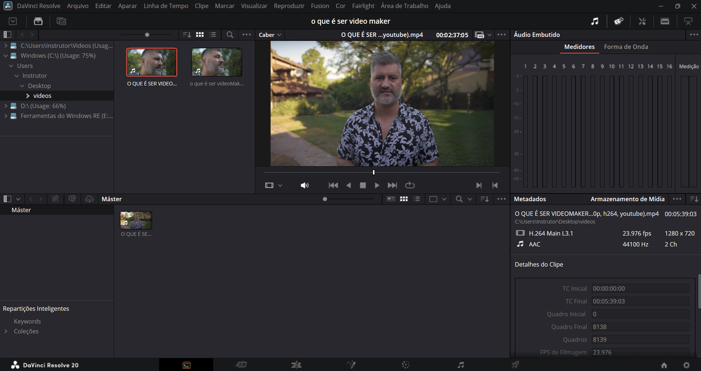
- Cut Page (Corte): Uma página rápida para montagem e corte de clipes. 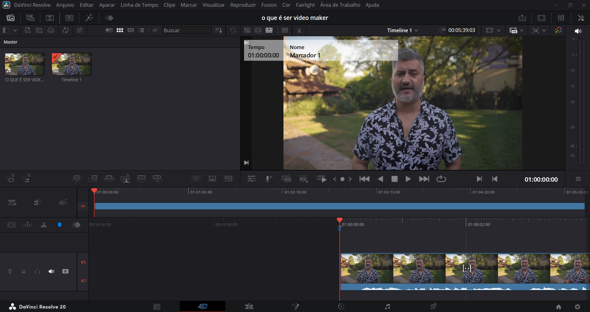
- Edit Page (Edição): A principal página de edição, com uma timeline mais tradicional e ferramentas avançadas. 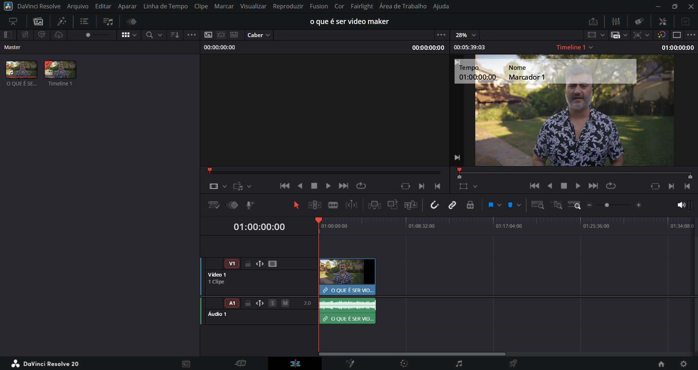
- Fusion Page (Fusão): Para efeitos visuais e motion graphics complexos. 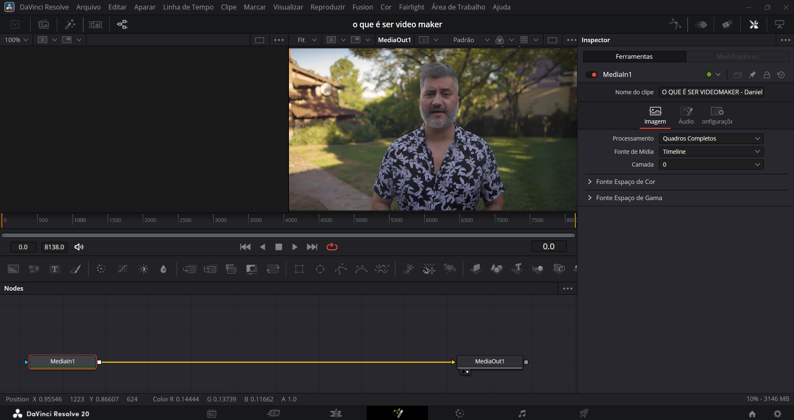
- Color Page (Cor): Onde você fará a correção de cor e o color grading (um dos pontos fortes do Resolve!). 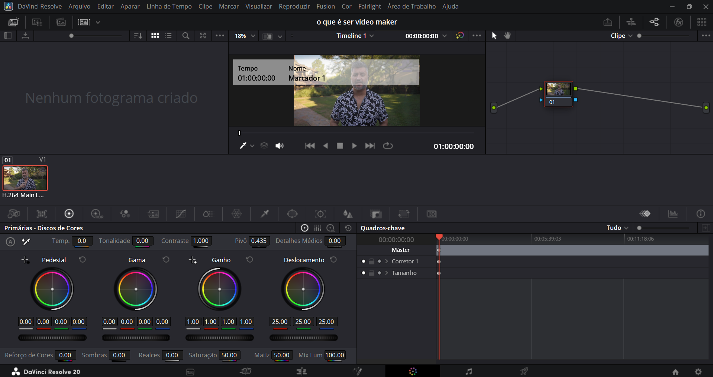
- Fairlight Page (Áudio): Para mixagem e edição de áudio.

- Deliver Page (Entrega): Para renderizar e exportar seu projeto final. 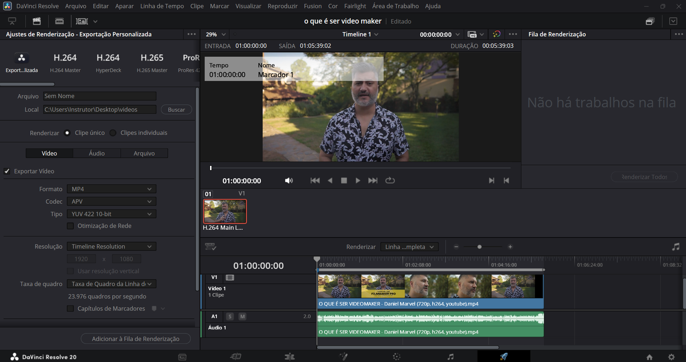
Parte 3: Começando um Projeto
- Novo Projeto: Na tela inicial do DaVinci Resolve, clique em "New Project" (Novo Projeto). Dê um nome ao seu projeto e clique em "Create" (Criar).
Parte 4: Importando Mídia (Media Page)
-
Acesse a Media Page: Clique no ícone da "Media Page" na parte inferior.
O primeiro passo é garantir que você esteja na "Media Page" (Página de Mídia). Na imagem, você pode ver que o ícone da Media Page já está selecionado na parte inferior da interface. Ele geralmente se parece com dois rolos de filme.
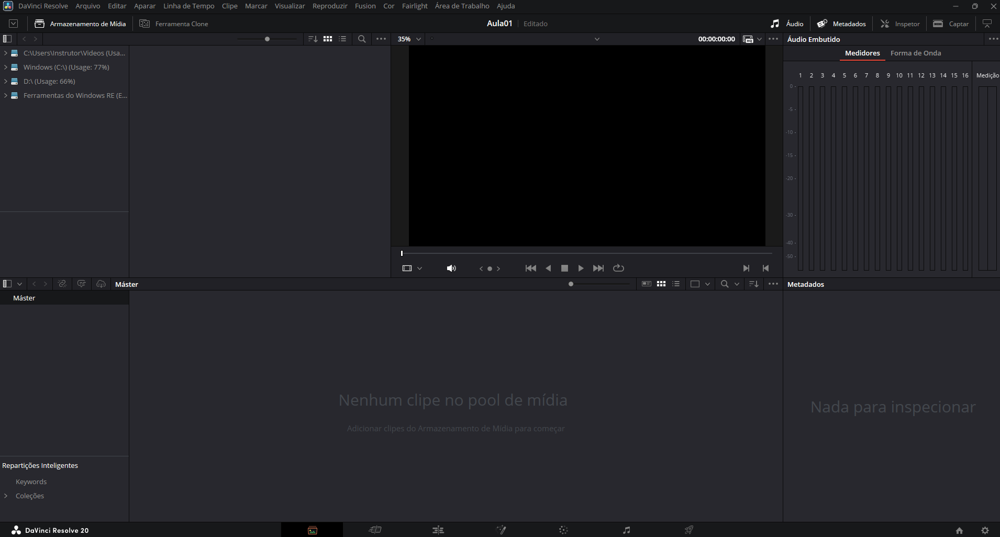 - Importar: No painel "Media Storage" (Armazenamento de Mídia) à esquerda, navegue até a pasta onde seus arquivos de vídeo e áudio estão. 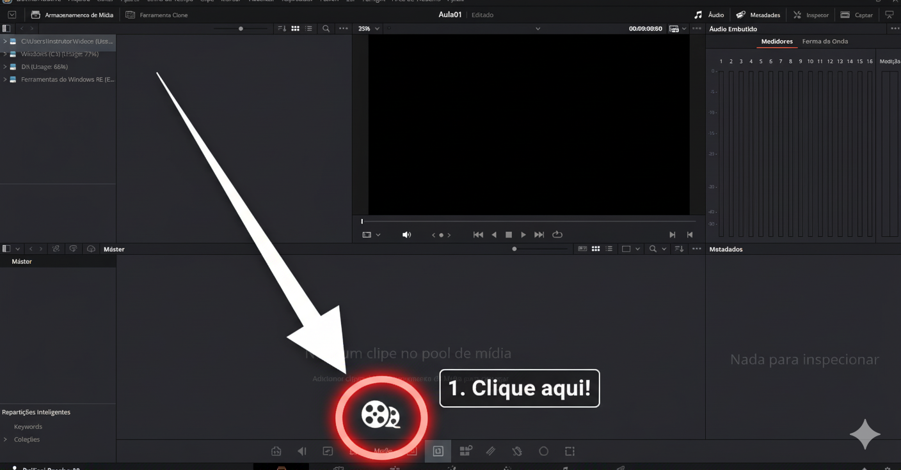 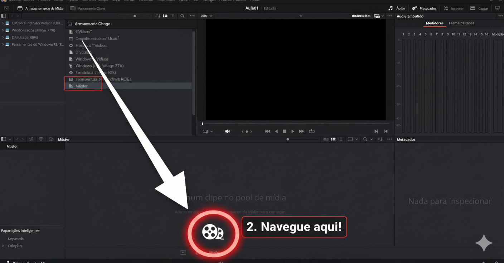 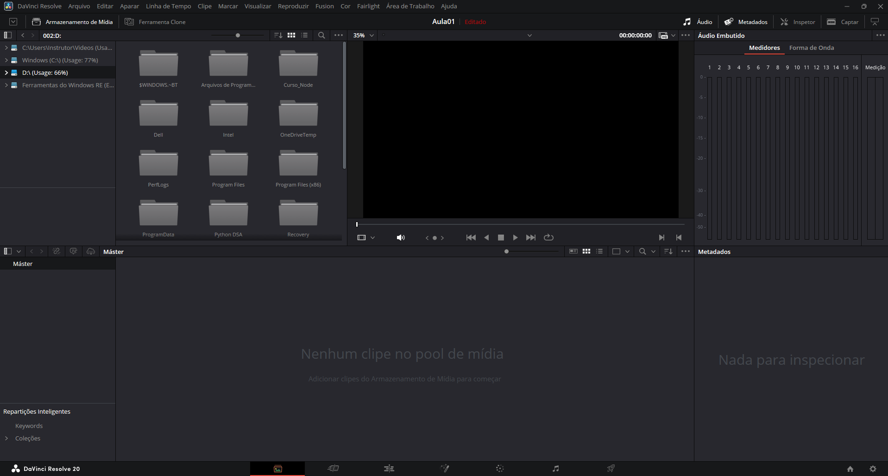
- Arraste e Solte: Uma vez que você encontre seus arquivos no painel "Media Storage", selecione-os e simplesmente arraste-os para o painel "Media Pool" (Piscina de Mídia), que é a área maior no centro inferior da tela, onde atualmente diz "Nenhum clipe no pool de mídia". Importar Mídia: Alternativamente, você pode clicar com o botão direito do mouse em qualquer lugar dentro do painel "Media Pool" e selecionar a opção "Import Media" no menu de contexto. Isso abrirá uma janela do explorador de arquivos onde você poderá navegar e selecionar seus arquivos. 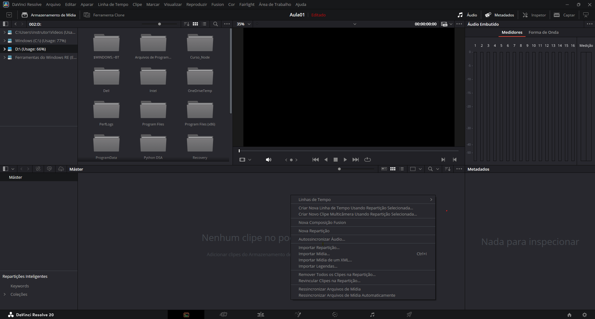
Parte 5: Edição Básica (Edit Page)
- Acesse a Edit Page: Clique no ícone da "Edit Page" na parte inferior.
- Criar uma Timeline: Arraste um clipe do "Media Pool" para a área vazia da timeline no centro da tela. O Resolve criará automaticamente uma timeline com base nas configurações desse clipe.
- Adicionar Clipes: Continue arrastando outros clipes para a timeline, organizando-os na ordem desejada.
-
Cortar Clipes:
- Posicione o "playhead" (a linha vertical vermelha) onde você quer fazer um corte.
- Use a ferramenta "Blade Edit Mode" (atalho
B) para cortar o clipe. Clique no clipe com a lâmina para dividi-lo. - Volte para a ferramenta "Selection Mode" (atalho
A) para selecionar e mover as partes dos clipes. - Selecione uma parte indesejada e pressione
Deletepara removê-la.
- Ajustar Duração: Arraste as bordas dos clipes na timeline para encurtar ou estender sua duração.
- Adicionar Transições: No painel "Effects Library" (Biblioteca de Efeitos) no canto superior esquerdo, expanda "Video Transitions". Arraste uma transição (ex: "Cross Dissolve") entre dois clipes na timeline.
Parte 6: Correção de Cor (Color Page)
- Acesse a Color Page: Clique no ícone da "Color Page" na parte inferior. Esta é a joia da cor do Resolve!
- Visualizando: No monitor à esquerda, você verá o clipe selecionado. À direita, você tem os "Nodes" (Nós) e vários painéis de ferramentas de cor.
-
Correção Primária:
- Lift, Gamma, Gain (Rodas de Cores): Use as rodas de cores para ajustar as sombras (Lift), tons médios (Gamma) e realces (Gain). Arraste o ponto central para adicionar cor ou o círculo externo para ajustar o brilho.
- Offset: Ajusta o brilho geral da imagem.
- Contraste e Saturação: Encontre os controles de contraste e saturação para ajustar a "punch" e a intensidade das cores do seu clipe.
- Usando Nodes: Pense nos nodes como camadas de ajustes. Para adicionar um novo node, clique com o botão direito na área de nodes e selecione "Add Serial Node". Cada node pode ter um ajuste diferente, o que permite um controle muito preciso.
Parte 7: Edição de Áudio Básica (Fairlight Page)
- Acesse a Fairlight Page: Clique no ícone da "Fairlight Page" na parte inferior.
- Ajustar Volume: Na timeline, você verá uma linha no meio de cada clipe de áudio. Arraste-a para cima ou para baixo para aumentar ou diminuir o volume.
- Crossfades de Áudio: Arraste as bordas dos clipes de áudio para criar fades de entrada/saída ou crossfades automáticos entre clipes adjacentes.
Parte 8: Exportando Seu Projeto (Deliver Page)
- Acesse a Deliver Page: Clique no ícone da "Deliver Page" na parte inferior.
-
Configurações de Renderização:
- Filename (Nome do arquivo): Dê um nome ao seu vídeo final.
- Location (Localização): Escolha onde salvar o arquivo.
- Format (Formato): H.264 ou H.265 (MP4) são boas opções para upload na web.
- Codec: H.264 é geralmente compatível com a maioria dos lugares.
- Resolution (Resolução) e Frame Rate (Taxa de Quadros): Mantenha as configurações da sua timeline ou ajuste conforme necessário.
- Quality (Qualidade): Escolha "Automatic" ou "Best".
- Adicionar à Render Queue: Clique em "Add to Render Queue" (Adicionar à Fila de Renderização) no canto inferior esquerdo.
- Iniciar Renderização: No painel "Render Queue" à direita, clique em "Start Render" (Iniciar Renderização). O Resolve processará seu vídeo e o salvará no local especificado.
---